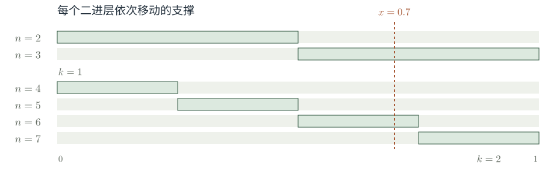
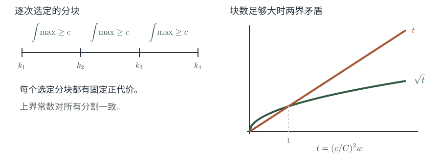
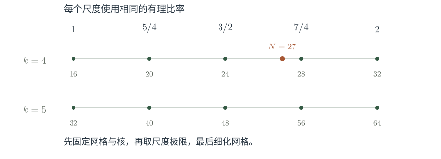
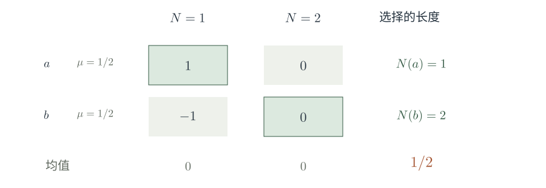
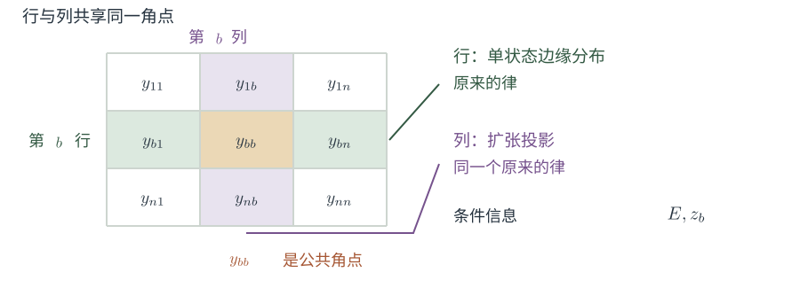

专题报告 · 约 43 分钟
多重逐点遍历定理
同一起点，不同速度。
几乎每条轨道上的长期平均，
能否趋于同一个乘积极限？
从振荡控制，到选择长度后的联合分布
讲述稿 · 1.25分钟
1 / 22 多重逐点遍历定理
本报告围绕一个问题：从同一点出发，以不同整数速度观察一个保概率系统，读数乘积的长期平均，何时对几乎每个起点收敛？我们把四篇手稿中的结果与证明步骤放在一起，按它们处理的数学困难组织讨论。
前半段讨论如何从范数收敛进入逐点收敛。核心是一个对任意确定分块统一的振荡估计，以及它背后的随尺度变化的测试函数。后半段讨论更高阶时的另一种困难：若收敛失败，平均长度可以依赖起点选择，这会改变联合分布。需要找出在这种选择之下仍然保持的条件分布约束。
我们会展开几个可以直接核对的推导。局部调和分析估计与高阶混合结果则标明它们在证明中的位置和准确作用。
技术展开与精确出处
全文使用四篇 2026-10-04 手稿的 2026-10-08 已核对版本。参考文献字母只用于页脚定位：A 为任意有限阶稿，B 为四重稿，C 为不同整数斜率三重稿，D 为基本三重稿。它们的叙事位置由共同数学问题决定。
本报告覆盖主陈述、关键推导和结构步骤。对全部伴随论文的独立证明审查尚未完成，具体步骤集中在第 21 页。
原稿表述 · 固定函数与全部整数长度
主结果
设 (X,F,μ) 为概率空间，T 可逆、双可测、保概率且 mixing，fj∈L∞(μ) 为固定复值函数。
三个位点
固定的两两不同非零整数
b1,b2,b3，允许正负。
任意有限个位点
固定 d≥2，
(b1,…,bd)=(1,…,d)。
全部整数长度；无 mixing 速率；原空间无标准性要求。例外集可依赖固定函数。
由 A 直接推出：任意固定有限个互异、同号的非零整数斜率。此推论沿用 A 的全部证明前提。
讲述稿 · 2.5分钟
2 / 22 主结果
先把结论的共同边界放在一页。动力学条件是通常的 mixing，即任意两个可测集的相关在时间间隔趋于无穷时趋于乘积。主定理均不假设定量混合速率。
关于斜率有两个层次。三重结论允许任意固定的三个不同非零整数，包括正负混合。任意阶结论在原文中写成连续正整数斜率。基本三重和四重的陈述分别落在后一族的三个位点与四个位点上，但它们的证明提供了后续使用的不同工具。填入常数函数还可得到互异正斜率的直接推论；全负斜率则对逆变换应用同一结论。
这里每次先固定函数元组和斜率，再谈几乎处处收敛。允许例外零测集随这些数据变化。也没有要求原概率空间本身标准化。对于固定函数，可以把其全部整数平移送入一个可数乘积的标准模型，再把结论拉回。
结论沿全部正整数长度成立，而非某条事先挑出的子列。报告后面两个主要步骤，正是在解释这个量词为什么困难。
技术展开与精确出处
陈述位置与直接推论
三重任意整数斜率为 C Theorem 1.1，p.1；连续斜率任意有限阶为 A Theorem 1.1，p.1。基本三重和四重分别见 D Theorem 1.1，p.2 与 B Theorem 1.1，p.1。四个主陈述均取固定有界可测函数、可逆双可测 mixing 保概率变换。
在本页相同的系统与函数假设下，A 的主定理直接蕴含有限个互异同号非零整数斜率的相同乘积极限。验证分为四步：
- 若全部 bj>0，取 M=max(2,maxjbj)，在 1,…,M 未使用的位置填入常数函数 1，应用 A。
- 若全部 bj<0，令 S=T−1、cj=−bj>0。
- 逆变换仍可逆、双可测、保概率，而且 μ(E∩S−nF)=μ(T−nE∩F)→μ(E)μ(F) 当 ∣n∣→∞，故仍 mixing。
- 由 Tbjn=Scjn，应用第一步。
这是原主定理的直接推论，沿用全部证明前提，不另称新增定理。例外零测集可依赖固定函数元组与固定斜率。
互异性不可省去。重复斜率须先合并相应函数，所得极限是合并后函数积分的乘积。这一推论不覆盖任意高阶的正负混合斜率，也不涉及任意多项式或稀疏时间。
固定元组的标准因子：取有界代表元，映射 x↦(fj(Tnx))1≤j≤d, n∈Z。其像分布位于可数个紧圆盘的乘积，平移与变换相容。可数个平移的零集并仍是零集。见 A §2.1，p.3。
第一个困难：轨道上的例外长度
同一个起点留下了对角约束
乘积空间上自然的测度是 μ⊗d。
这里的初始分布却是 Δ∗μ，其中 Δ(x)=(x,…,x)。
非原子情形，对角集合可有乘积测度零。
Birkhoff 在 μ⊗d 下的满测集，未必控制对角初始分布。
讲述稿 · 1.75分钟
3 / 22 同一个起点留下了对角约束
这个问题可以写成乘积空间上的一次平均。令乘积变换的第 j 个坐标按 bj 倍速度运行，观测函数取张量积。形式上，它和 Birkhoff 平均完全相似。
差别在初始分布。通常对乘积系统使用的保概率测度是乘积测度，每个坐标分别取样。当前平均则要求所有坐标从同一个 x 出发，初始点只在对角线上分布。对非原子空间，对角线在乘积测度下可以是零集，因此乘积测度意义下的几乎处处结论，对我们关心的全部初始点可能没有信息。
图中只画两个坐标来表示测度位置的差异。这个障碍解释了为什么“升到乘积空间”只是重写问题。后面出现的 joining，正是在寻找能够描述共享起点和不同速度之间关系的概率分布。
技术展开与精确出处
对角推前测度 Δ∗μ 通常不在 S 下不变。即使某个证明得到一个 S-不变的极限连接，仍需解释原始对角起点与这一连接的关系。这里没有将对角集合上的 Birkhoff 性质视作已知。
这也是多重 L2(μ) 范数理论与乘积空间 Birkhoff 定理所回答问题不同的原因：前者仍对原始起点 x 积分。
第一个困难 · 步骤 1/2
范数收敛留下什么未控制？
固定长度的整体误差
每个很晚的固定长度，
大误差集合很小。
固定起点的尾部
同一个起点，
最终没有反复出现的坏长度。
打字机序列：令 u1=0。对 k≥1、0≤j<2k，令
每个 x∈[0,1) 却满足 limsupnun(x)=1、liminfnun(x)=0。
第一个困难 · 步骤 2/2
范数收敛留下什么未控制？

每行对应一个示性函数。同一点在每一层被击中一次，也在其他行被错过。这里区分范数收敛与逐点收敛。
讲述稿 · 1.5分钟
4 / 22 范数收敛留下什么未控制？
范数收敛意味着，对每一个固定的晚期长度，大误差只出现在一个小集合上。逐点收敛要求更强：对同一个起点，所有足够晚的长度同时稳定。小集合可以随长度移动，这正是两种量词之间的距离。
打字机序列将单位区间依次分成越来越细的二进区间，每次只点亮其中一个。每一层中的每个函数，平方范数都等于区间长度，趋于零。但是每一个起点在每一层都会被点亮一次，也会遇到许多零，所以始终反复跳动。
这个例子只用于区分两种收敛方式。它不是所讨论遍历平均的反例。真正要补充的是对各个尺度之间的联合控制，使坏长度不能沿着起点不断移动。
技术展开与精确出处
Chebyshev 不等式由 L2 收敛给出 μ{∣AN−L∣>ε}→0，但这不足以控制这些事件的 limsup。如果额外有可求和界，则 Borel–Cantelli 可用。当前主定理既没有混合速率，也不能直接假设这种可求和误差。
若抽取 L2 误差可求和的子列，可以得到该子列的 a.e. 收敛。对全体平均长度，仍然需要振荡估计或其他稳定性论证。
图解及其范围
每一行对应一个示性函数。同一点在每一层被击中一次，也在该层的其他行被错过。这是明确的打字机序列，不是遍历平均的反例。
存在性与极限识别
收敛的极限也可能保留起点
取两点概率空间 X={0,1}，各点概率 1/2。
每个长度已经稳定
积分乘积为零
此系统可逆、保测、遍历，但不 mixing。结构可以留在极限中。
讲述稿 · 1.5分钟
5 / 22 收敛的极限也可能保留起点
现在把另两个问题分开：平均是否有极限，以及极限是什么。两点交换系统已经说明二者不同。函数取两个符号，同一轨道上的三次读取相乘，时间变量完全抵消，结果始终等于初始符号。
因此平均对每个点都收敛，但是它的极限不是积分之积。系统确实遍历，因为只有空集与全集是不变集；它不是 mixing，因为相关随着时间奇偶变化。
后面的三重证明也有同样的分工。振荡估计使极限存在，并不需要 mixing。识别为各积分之积，则使用 mixing 所提供的范数结论。保持这两个步骤分开，才能正确理解为什么一般系统上的三重输入能够用于那些本身并不混合的辅助系统。
技术展开与精确出处
相同现象也可在无理旋转中出现。令 T(x)=x+α 于 R/Z，α∈/Q，取 f1=f2=e2πix、f3=e−2πix。沿斜率 1,2,3 的乘积恒为 e2πix，而每个积分均为零。这只是结构性极限的例子，不验证 mixing 主定理。
结果的背景
已有结构结果说明了两种可能
measure-distal
可逆、遍历的 Lebesgue 概率系统；任意固定有限 d 与 fj∈L∞。
沿 n,2n,…,dn 的平均
几乎处处收敛。
Huang–Shao–Ye，Theorem C
weak mixing 加 PID
可逆 Lebesgue 保概率系统，满足 weak mixing 与 PID；任意固定有限 d 与有界输入。
同样的平均几乎处处
趋于积分乘积。
Gutman–Huang–Shao–Ye，Theorem 3.4
一般系统的范数收敛与这些逐点结构结果，提供不同层次的信息。
讲述稿 · 1.75分钟
6 / 22 已有结构结果说明了两种可能
这里回顾的结构结果与后面的证明有直接关系。Huang、Shao、Ye 对遍历 measure-distal 系统证明了任意有限阶逐点收敛。它的极限可以保留结构信息，因此没有一般的积分乘积断言。
Gutman、Huang、Shao、Ye 则在 weak mixing 加 PID 的条件下得到积分乘积极限。PID 要求：一个有限重自连接，只要各对坐标独立，就必须完全独立。这个条件不能从 weak mixing 的名字中读出来。
measure-distal 是由相对紧扩张和逆极限构成的测度结构类。在高阶论证里，它承担一个具体工作：即使选取长度依赖起点，distal 参数上已经存在的全长度逐点极限仍然有效。三重输入只控制小的状态边缘，而整个参数阵列可能有任意多的位置，因此需要任意阶 distal 收敛。
这也说明，已有工作不能概括成此前只有二重。不同结构类别已经有多重逐点结果，而当前主陈述试图在 mixing 假设下达到任意阶。
技术展开与精确出处
HSY：Pointwise convergence of multiple ergodic averages and strictly ergodic models，Theorem C；J. Analyse Math. 139 (2019), 265–305。假设为可逆、遍历 measure-distal 的 Lebesgue 概率系统，结论对每个固定 d 与有界元组成立。
GHSY：Almost sure convergence of the multiple ergodic average for certain weakly mixing systems，Theorem 3.4；Acta Math. Sin. (Engl. Ser.) 34 (2018), 79–90。PID 的含义是：对每个 k≥3，任意两坐标边缘均为 μ⊗μ 的 k-重自连接等于 μ⊗k。
后续使用的非遍历 distal 版本、最大 distal 因子及相对不交性，按 B Proposition 2.2 与 A Proposition 2.3 的形式引用。不能把 HSY 的遍历版本单独当作这些步骤的全部证明。
整体路线
证明需要越过两个障碍
一、各尺度之间的反复跳动
对所有确定分块，
总振荡只有次线性增长。
二、随起点选择长度的偏差
把失败保存在一个联合分布中，
证明足够多的条件分布约束仍然成立。
前三个位点提供逐点输入；更高阶通过选择法则与结构论组织。
范数极限贯穿两部分，用于识别极限和消除固定长度的背景贡献。
讲述稿 · 1.25分钟
7 / 22 证明需要越过两个障碍
接下来按这两个障碍展开。第一部分需要一个能排除无限次跳动的统一估计。若在一个正测集上始终不收敛，就能找到任意多个确定时间块，每块贡献固定的正振荡；总量随块数线性增长。只要上界次线性，就产生矛盾。
第二部分保留收敛失败，而不是直接控制所有长度。每个起点挑选一个使相关偏大的晚期长度，再取这些轨道片段的联合分布。这个分布带着失败见证。后续要证明它仍满足一组恰当的条件独立性，最后由一个极值选择产生矛盾。
这两部分不是互不相干的办法。第一部分在任意辅助系统上提供至多三个位点的逐点结论，正好成为第二部分中小边缘分布的输入。
技术展开与精确出处
第一部分的解析输入是三重振荡，并非任意阶振荡。第二部分也没有假定任意扩张上的高阶逐点定理。后者通过最小支撑选择，在特定空间坐标列表上推出低于该最小值的条件乘积分布。
从范数到逐点
对任意确定分块的振荡估计
任意可逆保概率系统；固定不同非零整数 bj，gcd(∣b1∣,∣b2∣,∣b3∣)=1；∣fj∣≤1。固定允许的光滑平均核 ϕ。
对每个确定的 0≤k1<⋯<kw+1，原文给出
允许依赖已经固定的核与斜率。
此处没有 mixing 或 ergodicity 假设。
讲述稿 · 2.5分钟
8 / 22 对任意确定分块的振荡估计
这里是三重部分真正需要的估计。为了接入尺度分析，先使用平滑的二进尺度平均。平均核固定以后，比较每一个块内的所有尺度与该块的起点。最大值在积分号内，所以不同的起点可以在块内选择不同的坏尺度。
上界是块数的平方根。重要的是常数完全不依赖分块端点、尺度跨度、块数、系统和归一化的输入。否则下一页逐块选择端点时，常数可能随选择增长，就不能排除不收敛。
核有总质量一、前三阶矩为零等解析条件，因此允许取负值。零矩条件用于尺度差的消去。这里并不要求核非负，也不要求常数对所有核一致。
三个整数斜率先约去公因子。对给定斜率，常数可以不同。原稿没有声称对所有整数斜率同时统一的估计。
最关键的动力学范围是：此估计在任意可逆保概率系统上成立。混合性还没有出现。
技术展开与精确出处
允许的平均核
ϕ 为实值、紧支撑的光滑函数，满足 ∫ϕ=1、∫trϕ(t)dt=0 对 r=1,2,3，且存在 G≥1 使
核参数 G 可以依赖 ϕ。上述振荡界为 C Proposition 3.5，pp.8–9。若原斜率公因子为 g，以 Tg 和 bj/g 代换；一般系统中仍可逆保测。
来自局部估计的步骤
局部实直线四线性估计经整数重建、有限序列估计，再通过截断轨道转移到任意概率系统。转移常数不依赖该系统，也不要求 Rokhlin 塔。完整后续推导见 C §3.1–§3.2，pp.5–9。
一段完整的测度论推导 · 步骤 1/2
次线性振荡排除逐点不收敛
一段完整的测度论推导 · 步骤 2/2
次线性振荡排除逐点不收敛

两界同除以 C2/c，得到 t 与 t。先固定坏集与常数，再增加逐次选定的分块数量。
讲述稿 · 2.5分钟
9 / 22 次线性振荡排除逐点不收敛
这一页把振荡估计到逐点收敛的论证完整说出。假设不收敛。尾部的 Cauchy 振荡是一个可测函数，因此可以找到一个正测集合和固定的正数，使每个点的每个尾部仍有至少这个大小的振荡。
现在固定一个块的左端点。对坏集合中的每个点，必有某个更晚尺度与左端值相差至少 δ。这个更晚尺度可以依赖该点。将右端点逐渐推远，块内最大振荡单调增加，所以积分趋向一个至少为 δd0 的值。由此可以选取一个确定右端点，使这一块的积分至少达到它的一半。
这个步骤可以不断重复。并没有要求同一尺度对整个坏集合同时奏效，也没有要求一个有限块覆盖所有坏点。积分的固定正下界就足够了。
前 w 个块给出线性下界，而统一的振荡估计只给平方根上界。先固定坏集合、振荡阈值和常数，再让块数足够大，就产生矛盾。因此几乎处处满足 Cauchy 条件，复数完备性给出极限。
技术展开与精确出处
量词与端点选择
对可测复序列 Zk，定义 ω(x)=infKsupm,n≥K∣Zm(x)−Zn(x)∣。若不收敛集合有正测度，可取 E={ω>2δ}，d0=μ(E)>0。对每个确定 K，三角不等式给出 supℓ≥K∣Zℓ−ZK∣≥δ 于 E。
有限最大值随 L 单调增加。单调收敛定理保证存在确定的 L>K，使 ∫maxK≤ℓ≤L∣Zℓ−ZK∣dμ≥δd0/2。递归定义端点即可。
实质需要的是对所有确定分块统一的 o(w) 上界。若上界仅为 Cw，则 Zk=(−1)k 是反例。若常数依赖端点，也不能使用本反证。
图解及其范围
这里 c=δd0/2。右图将两界同时除以 C2/c，因此曲线恰为 t 与 t。矛盾来自可以逐次选定任意多个确定分块。
振荡估计所需的局部分析
块内最大值产生了变化的测试函数
把最大振荡写成线性测试时，停止尺度随 x 改变：
相位校正后，差分核配上随深度改变的第四个输入。
固定函数的算子有界性，尚不足以提供这里的振荡结论。
讲述稿 · 2.5分钟
10 / 22 块内最大值产生了变化的测试函数
从这一页开始，需要回到调和分析的输入。振荡的最大值不是一个固定函数测试。对每个起点，选择达到有限最大值的最早尺度，再选一个复相位把差旋转到正实轴。这个选择可测。
接着把两个尺度之差写成相邻尺度差之和。第四个测试函数在到达停止尺度之前保留相位，之后变成零。它因此随尺度变化，并在每块内最多发生一次跳变。
局部估计用“块内最大幅度加总变差”控制这种变化。把测试函数除以块数的平方根，并加上固定的安全常数，就能满足这种归一化。最后恢复归一化，得到所需的平方根振荡界。
因此真正重要的统一性不是一个固定函数的算子范数。必须证明输入随深度变化后，投影、row 和 Bessel 等局部估计仍然保持对块数和树深度独立的常数。三线性 Hilbert 变换的伴随分析在这里进入，不能把其主算子结论直接替代这一变动输入估计。
技术展开与精确出处
局部结果的完整条件
固定 primitive 的不同整数 b0=0,b1,b2,b3 及 δ0>0,C0≥1。对有限二进树、根区间 J、任意子族 I，每个长度为 r 的 I 配以核 wI∈Cc∞(R2)。支撑上每个 x+bjt 均在 I 内且距边界至少 δ0r；对每个 v,j 有 ∫wI(v−bjt,t)dt=0；导数满足 ∥∂xa∂tdwI∥∞≤r−(a+d)[C0(a+d+2)]C0(a+d+2)。
定义 HI(z0,…,z3)=r−2∫R2wI(x,t)∏j=03zj(x+bjt)dxdt。每个输入 zj,s 在全部深度给定并以 Wj 个确定连续块分割，逐点满足 VB(zj)≤Wj−1/2。零延拓到 J 外，则 C Theorem 2.2 断言
常数与格点平移、树、深度、子族、核、四个分块及块数无关。实际振荡线性化在四输入中只让测试槽变化。核心依赖见 D Theorem 3.2 与 C §1.2、§§4–6，以及伴随稿 H。
三重输入的适用范围
不同斜率改变了同一个局部几何
测试位置 0 与三个观察位置组成四个线性形式。
整数重建
使用整个 primitive 配置的整数左逆。
二次消去
Vandermonde 关系替代等差系数的特殊恒等式。
频率计数
高度基数保留斜率差的整除性；维数损失保持多项式。
(1,2,4) 不能靠对 T 取同一个幂并重排，化为 (1,2,3)。
讲述稿 · 1.5分钟
11 / 22 不同斜率改变了同一个局部几何
为何要专门处理不同整数斜率？观察形式之外，还有来自线性化的测试位置零。真正的解析对象是四个线性形式所组成的配置。
等差配置中方便使用的整数恒等式，在一般配置上可能失效。原文作了三类修改：首先从整个 primitive 配置建立整数重建，而不依赖某一对系数恰好形成幺模矩阵；其次由 Vandermonde 关系完成二次项的消去；最后在分离频率计数中选择兼容所有斜率差整除性的高度基数。
最后一点还要求维数损失保持多项式，因为指数级损失可能无法被最终参数选择吸收。这些修改解释了为何非等差三斜率不是基本三重定理的一个记号替换。
但系数无关的投影与 row 估计仍来自伴随论文。报告把这部分作为解析步骤，不在此把全部局部证明重复一遍。
技术展开与精确出处
C §1.2 明确说明其技术部分采用对 H 与 D 的 proof by reference，加上斜率敏感修改。固定 bj 时，不同斜率可改变常数，不要求对整个整数三元组族统一。
三个位点均要求非零且彼此不同，因此连同 b0=0 共四个不同系数。约去公因子不改变彼此不同或非零性。有关整数重建与二次消去见 C §2.2，pp.4–5；检测、局部化和频率修改见 §§4–5。
范数信息与逐点信息的交接
mixing 在这里识别已经存在的极限
对固定不同非零整数斜率，mixing 所给的范数极限为
∥RN±∥2=o(N)
Vkϕ→p 于 L2
与已有全尺度极限比较
极限存在来自振荡；乘积极限的识别来自范数结论。
讲述稿 · 1.75分钟
12 / 22 mixing 在这里识别已经存在的极限
振荡已经保证平滑平均沿所有二进尺度几乎处处收敛，但还没有说明极限是什么。此时使用 mixing 下的多重范数结论。事实上，固定不同非零整数斜率的乘积极限在 weak mixing 下已经有经典结果，所以这里不需要高阶 mixing 的外部新断言。
还存在一个需要写出的步骤：范数结论最初针对普通截断平均，而目前的逐点极限针对有符号的平滑核。我们分别对正、负时间建立去掉乘积极限后的部分和，范数均为小于线性阶。对平滑权重作有限分部求和，权重相邻差的大小是尺度的负二次方，累加后得到趋零的范数误差。
常数部分则由 Riemann 和收敛到核的质量一。于是同一个平滑平均在范数中趋于积分乘积。取一条几乎处处收敛的范数子列，与已经存在的全尺度逐点极限比较，就识别了极限。
这一步骤也允许平均核取负值，只需先固定核，再让尺度趋于无穷。
技术展开与精确出处
正负时间 Abel 步骤
令 Fn=∏j=13fj∘Tbjn、RN±=∑n=1N(F±n−p)，则 ∥RN±∥2=o(N)。固定 ϕ∈Cc1(R)，其支撑在 [−B,B]；取 a→∞，M=⌊Ba⌋+1，wn±=a−1ϕ(±n/a)，故 wM±=0。
右侧范数至多 a−2∥ϕ′∥∞∑n<M∥Rn±∥2。先取 N0 使后段 ∥Rn±∥2≤εn，有限前段乘 a−2 趋零，后段的极限上界为 Oϕ,B(ε)。最后 ε→0。n=0 项为 O(a−1)，常数项由 Riemann 和趋于 p。取 a=2k 即得结论。
范数输入包括混合正负斜率，见 C Lemmas 3.7–3.8，pp.10–11。不得只写“由硬平均的 L2 收敛显然得到平滑平均极限”。
从光滑二进尺度返回原平均 · 步骤 1/2
全部长度需要一族比例与同一个满测集
对有理 c∈[1,2]，用允许的有符号核逼近
可数个核的满测收敛集取交，得到 A⌊c2k⌋(x)→p。
用 [1,2] 上的有限有理网格控制相邻长度。
从光滑二进尺度返回原平均 · 步骤 2/2
全部长度需要一族比例与同一个满测集

全部有理比率与核逼近共用可数个满测集的交。图中网格只是一组示例，须先固定，再取尺度极限。
讲述稿 · 2分钟
13 / 22 全部长度需要一族比例与同一个满测集
只知道二进尺度收敛还不够，相邻的二进长度相差一倍。要覆盖其间的所有长度，原文先对每个有理比例使用光滑近似。
区间平均核本身不满足前三阶矩为零。允许核有符号，可以在较远处用很少的质量校正这些矩，同时保持总质量一和任意小的积分误差。这个构造不要求支撑或导数常数对近似精度统一。
对所有有理比例和所有近似精度，预先选取可数个核，并一次取满测集的交。在这个共同集合上，先让二进尺度趋于无穷，再缩小核的误差，得到每个有理比例上的普通平均都趋于同一个乘积极限。
最后，只需要一个初等的长度变化估计。用有限有理网格逼近任意长度相对于二进尺度的比例，两平均之差由相对长度误差控制。固定网格后先取极限，再加密网格，就覆盖全部正整数。
技术展开与精确出处
设 Nk=⌊c2k⌋，归一化 ∣Fn∣≤1。对固定允许核 ϕ，
第二项是紧支撑、有限跳点函数的 Riemann 和，极限为 ∥hc−ϕ∥1。因此在共同满测集上 limsupk∣ANk−p∣≤2−h，再令 h→∞。
选含 1,2 的有限有理网格，宽度不超过 η。对 2k≤N<2k+1，可使 ∣N−⌊c2k⌋∣≤η2k+1。长度变化误差至多 2η+21−k。先 k→∞，再 η→0。
A Lemma 2.5 将光滑振荡与一般系统的范数极限结合，得到标准可逆保概率系统上至多三个不同正整数斜率的全部长度 a.e. 收敛。那里不要求 mixing，且不声称极限为积分乘积。
图解及其范围
图中五个比率只是一组示例。网格间距为 Δ 时，相邻选定长度之差至多为 Δ2k+1。原估计给出至多 2Δ+o(1) 的误差。全部有理比率与核逼近共用可数个满测集的交。
第二个困难：选择长度后的分布 · 步骤 1/2
高阶失败可以变成一个正相关
中心化并选取实值项后，若结论失败，可找到正测集 E 与 δ>0，使
在每个起点选一个晚期长度 Na(x)≥2a，保留这次偏差。
保留下来的信息
所选片段的极限联合分布
含有非零中心化相关。
新出现的问题
长度看过起点以后才选择，
原有独立性可能改变。
第二个困难：选择长度后的分布 · 步骤 2/2
高阶失败可以变成一个正相关

这是有限有界观察值中的选择偏差示例。高亮格选取 N(a)=1 与 N(b)=2。它不是遍历定理的反例。
讲述稿 · 2.5分钟
14 / 22 高阶失败可以变成一个正相关
进入高阶后，原文改为从失败出发。先将复函数拆为实部与虚部，再把实函数分成均值和零均值部分。有限的多线性展开中，若乘积极限失败，至少有一项中心化相关未趋于零。范数收敛仍然成立，所以可以选取一个正测集合，在任意晚的时刻出现固定大小的偏差。必要时换一个函数的符号，将方向统一为偏正。
在这个集合中，每个起点选择一个足够晚、仍然偏正的长度；集合外使用预先指定的长度。候选长度可以来自有限比例乘二进尺度的可数集合，选第一个合格者即可保证可测。
这些被选择的轨道片段组成一族联合分布。取极限后，收敛失败以非零相关的形式留在分布中。问题是，选择是看过起点之后作出的，不能用固定长度的范数收敛自动控制它。
有限表格把这种偏差写得很清楚。两个点等概率。第一列的平均值为一与负一，第二列均为零，因此每个固定长度的均值都是零。在第一个点选择第一列、第二个点选择第二列，均值就变成二分之一。这只展示选择偏差，并不是遍历定理的反例。
技术展开与精确出处
具体见 A Lemma 3.1，pp.6–7。选择 Na(x,u) 与悬挂相位 u 无关，取值在 {c2k:c∈F,k≥a}，F⊂[1,2] 为固定有限网格，且在 Ec 上为 2a。
将离散正相关转入悬挂流时还需非负连续相位测试 Ψ。它限制小数时间使各槽的整数部分一致，从而把流平均与离散平均比较，误差为 O(2−a)。集合外的背景贡献由确定长度的 L2 趋零消失。因此保留的正相关不是将离散式直接无条件替换成连续时间式。
任意阶论证此时只需某个非空中心化支撑 J0，不预设其必须包含全部 d 个槽。最小支撑选择在后面统一进行。
图解及其范围
仅为有限示例。取 F1(a)=1、F1(b)=−1 及 F2=−F1，并令 An=(F1+⋯+Fn)/n。图中每个固定长度的均值均为零，但取 N(a)=1、N(b)=2 后均值为 1/2。这不证明被选择遍历平均的任何律。
所选片段的联合分布
参数法则与小边缘各有一个来源
在单位屋顶悬挂的扩张 Y 上，选择法则为
令 ωY:Y→WY 为时间一映射的最大 measure-distal 因子映射，Pi=ωY(yi)，P=(P1,…,Pd)。mY,w 是原测度 mY 给定参数 w 后的条件分布。
全部参数的法则
distal 任意阶逐点收敛
使整个 P 的法则不受选长影响。
至多三个状态的边缘
讲述稿 · 2.5分钟
15 / 22 参数法则与小边缘各有一个来源
为了让不同坐标的速度可以归一化，原文先把离散系统写成单位屋顶悬挂流，再允许取它的扩张。选择长度仍由原始悬挂坐标决定。右侧是所选片段对乘积测试的平均，使用一个固定自由超滤子取极限，得到联合分布。
原文证明这是真正的概率法则，单槽边缘为原测度，在各槽不同速度的乘积流下不变，而且与扩张投影相容。这些性质不能仅从符号上的极限写法看出。
接下来把每个状态的最大 distal 参数单独取出。任意阶 distal 逐点定理固定整个参数阵列的法则，因为已经沿全部长度收敛的平均，在任何趋于无穷的选择长度上仍有同样极限。
另一方面，一般系统上的至多三重逐点结论固定小状态边缘。相对弱混合替换先给出相对于这些槽自身参数的乘积分布；再用相对不交性，才能提升为给定全部参数阵列的条件乘积分布。
注意两个输入的范围不同。参数阵列可以很大，小状态边缘的逐点输入始终只用到三个槽。
技术展开与精确出处
悬挂与法则的条件
C=X×[0,1)，mC=μ⊗du，SCt(x,u)=(T⌊u+t⌋x,{u+t})。时间一映射保留相位 u，因此通常不遍历。Y 是标准概率空间上的联合 Borel 保概率流，以保概率因子 πY 映到 C。所有固定时间的相容关系按零集意义理解，时间积分由联合可测性与 Fubini 处理。
固定同一选择器族与自由超滤子 U，A Proposition 3.2，pp.7–8 建立唯一法则 λY，对所有有界可测槽测试满足上式。它的单槽边缘为 mY，在 (yi)↦(SYityi) 下不变，并与扩张及可数逆极限相容。
为何能给定全部参数
这里 WY 指时间一映射的最大 measure-distal 因子；A Proposition 2.3 保证它由所有流时刻保持。因此对 Gi 作固定时间平移后，条件期望仍可在同一因子上处理。
A Proposition 3.3 的条件法则不是仅由少数槽的边缘推出。先得给定 (Pi)i∈J 的相对乘积，再将该相对弱混合系统与整个 distal 参数阵列视为保共同因子的 joining。相对不交性才把条件提升到 P。所用的非遍历、幂稳定性与相对不交性为 B Proposition 2.2、A Proposition 2.3 中的结构输入。
选择前后共同使用的约束
需要保留的独立性恰好有缺口
将辅助输出分成三组。x0 为原空间坐标，D 为全部输出的空间坐标列表，DH 只取组集 H，V 收集全部悬挂相位。
它与三组整体之间仍可有相关。
有限类比：独立公平符号 U1,U2,U3，令 X=U1U2U3。
讲述稿 · 2分钟
16 / 22 需要保留的独立性恰好有缺口
这里写出高阶构造始终要保持的准确约束。所有辅助输出的空间坐标，给定全部悬挂相位后服从乘积分布。原空间坐标与任意真子集的组共同服从乘积分布，也就是与任意两组的联合独立。
但是没有要求原坐标与三组整体独立。这一缺口是有意保留的，否则收敛失败所带来的高阶相关会被直接排除，而没有证明它不能存在。
三个独立符号给出一个准确的有限类比。它们的乘积与其中任意两个符号独立，但完全由三个符号共同确定。将这一乘积作为原坐标，就满足上述独立性模式。
真实构造还要求各输出是流的因子，以正有理速度运行，并与原悬挂相容。有限符号例子只解释独立性所允许的相关形状。
接下来的难点是：当长度依赖原坐标选择，再在各个槽复制输出时，这两条条件乘积分布能否保持。它需要额外估计，不是一次形式上的取极限。
技术展开与精确出处
主画面中的 grp(γ) 表示输出 γ 的组号。张量乘积对组号属于 H 的全部输出坐标取积；每组可含多个输出，也允许空组。
每个输出 Dγ:Y→C 为保概率映射，满足 Dγ(SYty)=SCqγtDγ(y)，qγ>0 为有理数。Definition 4.1 与 Lemma 4.2（A，pp.10–11）还把上述条件从相位 V 提升到最大 distal 因子 WY。该提升使用固定相位下的 mixing 乘积系统与 distal 扩张的相对不交性。
有限例子的核对：固定任何两符号，第三个仍公平独立，所以 X 条件分布仍公平；同时 XU1U2U3=1 恒成立，故全体不共同独立。
保持条件分布的定量步骤
张量投影计数控制选择造成的偏差
若单位球向量除每点至多 L 个坏配对外，均满足 ∣⟨vi,vj⟩∣≤η，则
真正需要的加强
很少的 xj⊗yj
能在同一个低秩测试空间中
保留大投影。
在选择法则中的用途
拆成高协方差投影部分与余项，
分别控制大投影的数量
和跨候选长度的可求和误差。
环境 Hilbert 空间维数不进入常数；不要求定量 mixing 速率。
讲述稿 · 2分钟
17 / 22 张量投影计数控制选择造成的偏差
先看一个可以直接展开的估计。把平均向量的平方范数写成所有内积的平均。对角项有 m 个，每点的坏配对至多 L 个，其余内积不超过 η，便得到这一上界。
如果许多向量都集中在远离零的一个小球内，它们的平均不会很小。这就限制了能集中在同一位置的向量数量。真实证明需要一个更强的张量版本：两个近正交向量族的张量积，在任意给定的低秩测试空间中，只有很少的向量能保留大投影。
选长事件会改变三组联合分布，形成新的密度。原文把相关的协方差分解成一个慢慢增长的低维主空间与余项。主空间中大投影的数量由张量投影计数限制，剩余部分的误差可以对所有候选长度求和。
此处的近正交来自多个时间位置之间的混合。为了得到相应的高阶近正交，原文导入“通常 mixing 推出所有有限阶 mixing”的伴随结果。这个输入将在依赖页单独列出。
技术展开与精确出处
完整的张量估计
B Theorem 4.1，p.11 与 A Theorem A.1，p.21：给定 0<ε≤1、整数 d≥1,L≥0，x1,…,xm、y1,…,ym 分别在两个实 Hilbert 空间的单位球中。对每个向量族，存在最大度至多 L 的图包含全部绝对内积大于 η 的非对角配对，且 0≤η≤ε2/104。两图可不同。则任意秩至多 d 的正交投影 P 满足
C 为普适常数。对 dm=⌈(1+logm)3/2⌉，右侧为 oε,L(m)，对环境维数、投影及允许的 η 一致。证明还需高协方差方向分离与 Gaussian 比较，主画面的平方展开只是其中的基本观察。
具体选长闭合见 A Proposition 4.3，pp.11–14。固定清除速度分母的整数 h，令 m(k,c)=⌊c2k/h⌋，pk,c 为选择事件的条件概率，则 ∑k,cpk,c=1。对足够大的 a，余项满足
这里 dm(k,c)−1=O(k−3/2)，可求和的是根号内的级数。投影部分先固定 ε 后取选择尺度极限，再令 ε→0。
从四个位置到任意有限阶
最小支撑限定了需要的独立性
每个位置允许读取 D，或 (x0,DH)，其中 H⊊{1,2,3}。
先取最小支撑 k
少于 k 个位置的允许空间列表，给定全部参数后服从乘积分布。
再使 r 最大
在同样的最小支撑上，尽量多的位置只依赖辅助变量。
一般系统上至多三项的逐点定理仍用于确定小状态边缘，并给出 k≥4。最小性没有给出任意完整状态的乘积律。
讲述稿 · 2分钟
18 / 22 最小支撑限定了需要的独立性
四个位置时，每个真子集至多含三个位置，一般系统上的至多三项逐点结论就足以确定这些完整状态的条件联合分布。位置数增大以后，真子集可能很大，不能直接重复这句话。
任意阶论证改为先在所有允许的辅助系统与非零中心化相关中，选择支撑位置数最小的一个，记为 k。每个位置只能读取规定的空间变量列表：全部辅助变量，或原变量连同旧三组中的一个真子集。将一般测试拆成均值与零均值部分，就能从最小性推出少于 k 个这类列表的条件乘积律。
这里控制的是这些列表，不是整个状态。完整状态的逐点结论仍只使用至多三个位置，并由此知道 k≥4。
固定这个最小的 k，再最大化只依赖辅助变量的位置数 r。如果所有位置都只依赖辅助变量，全部辅助变量的乘积律会使中心化相关为零，所以 r<k。后续只需保持同样的支撑和非零相关，再把一个含原变量的位置改成只依赖辅助变量的位置。
技术展开与精确出处
严格极值范围见 A §5.1、Lemma 5.1，pp.14–15。Φ 为全 distal 参数阵列上的有界实函数，各 hi 为其指定空间列表的有界实测试，对相应空间乘积法则中心化。允许列表为 Li=D，或 Li=(x0,DHi)，其中 Hi⊊{1,2,3}。条件独立性还保证这些测试给定自身 distal 参数后均值为零。
若少于 k 个不同位置各指定一个允许列表，将测试展开为均值与中心化部分。每个非恒定项的支撑小于 k，都由最小性消失，因此列表们给定全参数后服从其空间乘积法则。此论证不允许把列表换成任意可测完整状态。A Proposition 3.3 另行用一般系统上至多三项的逐点收敛，确定至多三个完整状态的条件联合分布。
选一个含原变量的位置 b。由于 k≥4，可取满射 τ:J∖{b}→{1,2,3}，把其余位置各自的整份允许列表分入三组。遗漏一个新组，至少遗漏一个旧支撑位置，所以可以使用小于 k 的列表乘积律。角点旧组三编号保留，使原来含原变量的函数仍属于允许类别。全部新辅助变量的乘积律还需用 r 的最大性，见 A Lemma 5.3，pp.16–17。
四重论证直接在四位置相关中最大化 r。B Proposition 6.1 还用数组与 Bessel 不等式排除 r=3。任意阶论证不照搬这一额外上界，只需最小支撑与全辅助乘积律给出的 r<k。
稳定条件期望的范围
从其余三个状态改为单个状态
四个位置
给定参数和其余三个状态。
任意有限个位置
给定参数和一个指定状态。
两种论证也都稳定 D0=σ(P)。
有界能量逼近最优，再取逆极限，使指定的条件期望在进一步扩张下保持。
讲述稿 · 2分钟
19 / 22 从其余三个状态改为单个状态
从四个位置走向任意阶，改变的不只是极值选择，还包括要稳定哪些条件期望。
四重论证稳定两类信息：全部参数，以及全部参数加上其余三个状态。它在方阵中暂时遗漏一行，使用另外三行的条件独立，再借稳定性补回遗漏的列状态。这里的“三行”正落在一般系统的三重逐点结论范围内。
若机械地增加位置数，就会希望知道其余 n−1 行的完整状态条件律。最小支撑只给允许空间列表的乘积律，无法填补这一要求。任意阶论证改为稳定全部参数与单个状态，下一页的条件期望等式正使用这个改变。
构造稳定扩张的方法仍然是有界能量。对可数稠密测试反复接近所有允许扩张中的最优条件期望范数，再取可数逆极限。嵌套正交投影的范数相等，便使条件期望本身相等。这种共同方法，应用在两套不同的条件信息上。
技术展开与精确出处
两套条件信息
B Proposition 6.2 与式 (6.2)–(6.3)，pp.19–20，取 D0(Y)=σ(P) 和 Dl(Y)=σ(P,(yi)i=l)。这里恰有四个位置。A Lemma 5.2 与式 (5.2)–(5.3)，pp.15–16，改取 D0(Y)=σ(P) 和 Di(Y)=σ(P,yi)。
各自的结论是：每个在 C 上的标准流都有标准流扩张 Y∗，使对任意进一步标准流扩张 ρ:Y′→Y∗、任意 f∈L2(λY∗)、每个 ℓ∈{0}∪I，使用相应论文定义的 Dℓ 时都有
选取法则对扩张与可数逆极限相容，阶段测试在极限 L2 中稠密。扩张使条件信息增加，所以 ∥E[f∣Dℓ]∥22 单调且不超过 ∥f∥22。若嵌套闭子空间的投影为 P1,P2，则 ∥P2f∥2=∥P1f∥2+∥(P2−P1)f∥2；能量相等迫使条件期望相等。
四重的后续使用见 B Lemma 6.4，式 (6.9)–(6.11)，pp.21–22。任意阶的单状态使用见 A Lemma 6.1，式 (6.5)，p.18。这一改变避免先要求一般辅助系统上 n−1 项平均的逐点收敛；至多三项的逐点结论仍保留。
在同一支撑上增加一个只依赖辅助变量的位置 · 步骤 1/2
单个状态的稳定性连接行与列
| y11 | y1b | ⋯ |
| yb1 | ybb | ybn |
| ⋯ | ynb | ynn |
不假定转置对称。
第 b 行 zb：由新法则的单槽边缘得到旧法则。
第 b 列（旧参数 p）：由扩张投影的相容性得到旧法则。
共同角：本页 E 是新参数阵列；q 为旧相关中除第 b 槽外的测试乘积，g(p,y) 是它在旧法则下给定参数 p 与第 b 槽状态 y 后的条件平均。单状态稳定性给出下式。
结合参数法则与非零性论证，支撑仍为 k，而只依赖辅助变量的位置数从 r 增为 r+1。
在同一支撑上增加一个只依赖辅助变量的位置 · 步骤 2/2
单个状态的稳定性连接行与列

仅显示 1,b,n 三个位置，其间其他行列省略。图示定位条件信息，不断言转置对称性。
讲述稿 · 2.5分钟
20 / 22 单个状态的稳定性连接行与列
再次对选取分布作同样构造，得到一张有序方阵。第 b 行与第 b 列都服从旧分布，前者来自单个状态的边缘，后者来自扩张投影的相容性。这里不假定整张方阵在转置下对称。
区别在于如何比较行列。任意阶论证已经稳定“全部参数加单个状态”。因此给定新参数阵列 E 和第 b 行状态 zb 后，列上乘积的条件期望，只需旧列参数 p 与共同角 ybb。这正是所显示的等式。它不要求先知道其余 n−1 行的完整状态联合分布。
共同角的条件律与另一条参数独立性，将行列乘积化成纤维 Hilbert 空间中的配对。原非零相关保证相应条件期望不为零，所以可以选出一个非零配对；所得到的新测试只依赖重新分组后的辅助变量。
其余支撑位置不变，于是同样的 k 个位置上出现新的非零相关，而只依赖辅助变量的位置增加到 r+1，与最大性矛盾。至多三项逐点收敛确定小状态边缘，最小支撑保证重分组所需的列表乘积律，单状态稳定性则用来比较行列。
技术展开与精确出处
行列恒等式的准确对象
设 Z=Mb(Y)，其空间为 YI、测度为 mZ=λY，流为 SZt((yi)i)=(SYit/byi)i。因此投影到第 b 槽与 SYt 相容，是流因子。再取 zi=(yij)j，Ei=ωZ(zi)。令列状态 yi=yib，列的旧参数为 p，共同角旧参数为 w。取 q((yi)i)=∏j∈J∖{b}hj(Lj(yj))，g(P,yb)=EλY[q∣P,yb]，u(e,yb)=EmZ[q∣e,yb]。原非零相关保证 g=0 于 L2。
A Lemma 6.1，pp.18–19 给出
其中所需更强等式是 E[q((yi)i)∣E,zb]=g(p,ybb)，来自 A 对参数与单个状态的稳定性。Lemma 6.2 另外处理参数条件独立性。后续给定 w，参数 p 与 e=Eb 独立；令 R(e) 表示新 distal 参数所确定的旧全参数阵列。其条件法则 αw,βw 满足 R∗βw=αw 及 Eβw[u(e,⋅)∣R(e)]=g(R(e),⋅)。若行列配对恒零，对 e 按 R(e) 条件平均，就会使两个独立同分布的 g 向量几乎处处正交。在可分实 Hilbert 空间中，这迫使 g=0，与原相关矛盾。因此存在非零配对，进而得到增加一个只依赖辅助变量的位置的新相关。这里没有将 ∫gu 直接当作平方范数。详见 A §6.2–§6.4，pp.19–20。主画面的方阵只定位这些条件期望。
比较四重论证：B Lemma 6.4，式 (6.9)–(6.11)，先遗漏一行，利用其余三个完整行状态给定参数后的独立性，再用“参数加其余三个状态”的稳定性补回遗漏的列状态。任意阶的式 (6.5) 直接给出主画面的单状态等式。它没有把最小支撑的列表乘积律升级为完整状态独立，也没有取消一般系统上至多三项的逐点前提。
图解及其范围
示意子数组只显示 1,b,n 三个位置，其间其他行列已省略。图不声明转置对称性。精确条件期望恒等式与图一同展示。
原文推导与独立核验的边界
两项重大依赖决定了证明链的强度
局部四线性分析
H 的局部估计与随深度变化的版本，支撑三重振荡。
需核对：row / Bessel 一致性，系数修改，参数损失的吸收。
Rokhlin 的高阶 mixing 输入
通常 mixing 推出全部有限阶 mixing，用于选长闭合中的高阶相关。
这是独立的重大外部结果，不是 mixing 定义的形式推论。
另需核对非遍历 distal 结构、给定全部参数的小边缘、饱和行列等式之间的兼容性。
本报告核对主陈述与这些步骤的用途；完整核心证明链尚未独立审完。
讲述稿 · 2分钟
21 / 22 两项重大依赖决定了证明链的强度
现在可以准确说明这条证明链还依赖什么。第一项是局部调和分析。振荡反证本身很短，但它所需的变动输入估计包含投影、局部化、频率计数及最后的参数吸收。必须保证估计确实对块数与深度一致。核对后续测度论推导，不能替代对这个核心的审查。
第二项是关于 Rokhlin 多重 mixing 问题的伴随结果。通常 mixing 只涉及两组观察，所有有限阶 mixing 则涉及任意有限个相互远离的时间。高阶选长构造在相关与 packing 部分使用后一种性质，原文通过外部论文从通常 mixing 导入它。
除此之外，结构部分还有明确的步骤：非遍历 distal 版本、相对不交性如何提升条件法则、极限扩张中条件期望能否保持，以及方阵参数法则的兼容性。
这些是需要继续独立核验的位置。目前的状态是它们尚未完整审完，而不是已经发现了反例。数学结论的可靠程度应当由这些具体步骤的闭合决定。
技术展开与精确出处
局部分析依赖
H：An L3 bound for the trilinear Hilbert transform（2026-10-05）。D Theorem 3.2 发展深度变化版本；C Theorem 2.2 与 §§4–6 处理不同斜率。B 自有系数附录，因此四稿不构成简单的先后线性证明链。
高阶 mixing 的精确输入
R：Rokhlin’s multiple-mixing problem for one transformation（2026-09-23）。A Theorem 2.1 引入如下陈述：若 T 是可逆 mixing 保概率变换，则对每个固定 s≥2、gj∈L∞ 与整数时间，
本报告未完成该外部论文的独立证明审查。它在 A Theorem 2.1、B 选长闭合中的使用需要保留为可见依赖，不能当作普通 mixing 的定义展开。
可单独推进的核验
在接受局部 Theorem 2.2 的前提下，可独立检查转移、振荡反证、平滑极限、全长度网格。接受高阶 mixing 与结构输入以后，可继续逐项检查选长法则、条件乘积、packing、饱和与行列恒等式。各项的核验范围应分别记录。
讨论
共同的数学问题落在两个量词转换上
从每个固定长度的平均误差，
到几乎每个起点的全部晚期长度。
从确定长度下的相关结构，
到依赖起点选长之后仍可使用的条件分布。
三重振荡处理第一个转换。
参数法则、辅助独立性与极值方阵处理第二个转换。
进一步的问题：哪些局部统一性真正必需？哪些条件法则能在更一般时间配置下保持？
讲述稿 · 1.25分钟
22 / 22 共同的数学问题落在两个量词转换上
最后回到共同问题。贯穿这些论证的是两种量词转换：固定长度上的整体误差，如何控制固定起点的所有晚期长度；确定长度中的独立性，如何在看过起点再选长度之后继续发挥作用。
第一种转换由统一的次线性振荡控制完成。第二种转换依靠更细的条件法则：全参数与小状态边缘各有来源，三组输出保留恰当的独立性缺口，再用最小支撑与只依赖辅助变量的位置数的最大性得到矛盾。
从这个角度，三重与任意阶之间的联系不是简单增加函数个数，而是一般系统上的少数槽逐点结果，如何与任意阶 distal 参数信息结合，组织更大的联合分布。后续阅读可以围绕局部统一性与条件法则的闭合继续进行。
技术展开与精确出处
四篇原文与版本
以下均为官方公开论文入口。报告依据 2026-10-08 核对的仓库版本，commit 为 fd4aeeb2ee4fc729c18d98444fed42fd0529eeeb。以下原文链接需联网打开；离线报告与公式本身不依赖网络。
- Pointwise Multiple Ergodic Averages for Mixing Transformations（2026-10-04，25 页）。
- Pointwise convergence of fourfold ergodic averages for mixing transformations（2026-10-04，36 页）。
- Triple ergodic averages with distinct integer slopes（2026-10-04，43 页）。
- Pointwise convergence of triple ergodic averages for mixing transformations（2026-10-04，61 页）。
已发表背景文献：Huang–Shao–Ye，Theorem C；Gutman–Huang–Shao–Ye，Theorem 3.4。
官方仓库及其验证状态说明。本报告没有把公开发布等同于完整同行评审或形式化核验。
技术备查 · 对应第 2 页
同号斜率：直接推论
在与主页面第2页相同的系统与函数假设下，A 的主定理直接蕴含有限个互异同号非零整数斜率的相同乘积极限。验证分为四步：
- 若全部 bj>0，取 M=max(2,maxjbj)，在 1,…,M 未使用的位置填入常数函数 1，应用 A。
- 若全部 bj<0，令 S=T−1、cj=−bj>0。
- 逆变换仍可逆、双可测、保概率，而且 μ(E∩S−nF)=μ(T−nE∩F)→μ(E)μ(F) 当 ∣n∣→∞，故仍 mixing。
- 由 Tbjn=Scjn，应用第一步。
这是原主定理的直接推论，沿用全部证明前提，不另称新增定理。例外零测集可依赖固定函数元组与固定斜率。
讲述稿
备查 1 / 23 同号斜率：直接推论
技术备查，不计入专题报告时长。
技术备查 · 对应第 2 页
重复斜率与标准因子
互异性不可省去。重复斜率须先合并相应函数，所得极限是合并后函数积分的乘积。这一推论不覆盖任意高阶的正负混合斜率，也不涉及任意多项式或稀疏时间。
固定元组的标准因子：取有界代表元，映射 x↦(fj(Tnx))1≤j≤d, n∈Z。其像分布位于可数个紧圆盘的乘积，平移与变换相容。可数个平移的零集并仍是零集。见 A §2.1，p.3。
讲述稿
备查 2 / 23 重复斜率与标准因子
技术备查，不计入专题报告时长。
技术备查 · 对应第 8 页
容许核与转移
允许的平均核
ϕ 为实值、紧支撑的光滑函数，满足 ∫ϕ=1、∫trϕ(t)dt=0 对 r=1,2,3，且存在 G≥1 使
核参数 G 可以依赖 ϕ。上述振荡界为 C Proposition 3.5，pp.8–9。若原斜率公因子为 g，以 Tg 和 bj/g 代换；一般系统中仍可逆保测。
来自局部估计的步骤
局部实直线四线性估计经整数重建、有限序列估计，再通过截断轨道转移到任意概率系统。转移常数不依赖该系统，也不要求 Rokhlin 塔。完整后续推导见 C §3.1–§3.2，pp.5–9。
讲述稿
备查 3 / 23 容许核与转移
技术备查，不计入专题报告时长。
技术备查 · 对应第 9 页
由不收敛选取确定端点
量词与端点选择
对可测复序列 Zk，定义 ω(x)=infKsupm,n≥K∣Zm(x)−Zn(x)∣。若不收敛集合有正测度，可取 E={ω>2δ}，d0=μ(E)>0。对每个确定 K，三角不等式给出 supℓ≥K∣Zℓ−ZK∣≥δ 于 E。
有限最大值随 L 单调增加。单调收敛定理保证存在确定的 L>K，使 ∫maxK≤ℓ≤L∣Zℓ−ZK∣dμ≥δd0/2。递归定义端点即可。
实质需要的是对所有确定分块统一的 o(w) 上界。若上界仅为 Cw，则 Zk=(−1)k 是反例。若常数依赖端点，也不能使用本反证。
讲述稿
备查 4 / 23 由不收敛选取确定端点
技术备查，不计入专题报告时长。
技术备查 · 对应第 10 页
局部估计：核的假设
局部结果的完整条件
固定 primitive 的不同整数 b0=0,b1,b2,b3 及 δ0>0,C0≥1。对有限二进树、根区间 J、任意子族 I，每个长度为 r 的 I 配以核 wI∈Cc∞(R2)。支撑上每个 x+bjt 均在 I 内且距边界至少 δ0r；对每个 v,j 有 ∫wI(v−bjt,t)dt=0；导数满足 ∥∂xa∂tdwI∥∞≤r−(a+d)[C0(a+d+2)]C0(a+d+2)。
讲述稿
备查 5 / 23 局部估计：核的假设
技术备查，不计入专题报告时长。
技术备查 · 对应第 10 页
局部估计：变动函数
定义 HI(z0,…,z3)=r−2∫R2wI(x,t)∏j=03zj(x+bjt)dxdt。每个输入 zj,s 在全部深度给定并以 Wj 个确定连续块分割，逐点满足 VB(zj)≤Wj−1/2。零延拓到 J 外，则 C Theorem 2.2 断言
常数与格点平移、树、深度、子族、核、四个分块及块数无关。实际振荡线性化在四输入中只让测试槽变化。核心依赖见 D Theorem 3.2 与 C §1.2、§§4–6，以及伴随稿 H。
讲述稿
备查 6 / 23 局部估计：变动函数
技术备查，不计入专题报告时长。
技术备查 · 对应第 12 页
正负时间的Abel求和
正负时间 Abel 步骤
令 Fn=∏j=13fj∘Tbjn、RN±=∑n=1N(F±n−p)，则 ∥RN±∥2=o(N)。固定 ϕ∈Cc1(R)，其支撑在 [−B,B]；取 a→∞，M=⌊Ba⌋+1，wn±=a−1ϕ(±n/a)，故 wM±=0。
右侧范数至多 a−2∥ϕ′∥∞∑n<M∥Rn±∥2。先取 N0 使后段 ∥Rn±∥2≤εn，有限前段乘 a−2 趋零，后段的极限上界为 Oϕ,B(ε)。最后 ε→0。n=0 项为 O(a−1)，常数项由 Riemann 和趋于 p。取 a=2k 即得结论。
范数输入包括混合正负斜率，见 C Lemmas 3.7–3.8，pp.10–11。不得只写“由硬平均的 L2 收敛显然得到平滑平均极限”。
讲述稿
备查 7 / 23 正负时间的Abel求和
技术备查，不计入专题报告时长。
技术备查 · 对应第 13 页
同一满测集与全部长度
设 Nk=⌊c2k⌋，归一化 ∣Fn∣≤1。对固定允许核 ϕ，
第二项是紧支撑、有限跳点函数的 Riemann 和，极限为 ∥hc−ϕ∥1。因此在共同满测集上 limsupk∣ANk−p∣≤2−h，再令 h→∞。
选含 1,2 的有限有理网格，宽度不超过 η。对 2k≤N<2k+1，可使 ∣N−⌊c2k⌋∣≤η2k+1。长度变化误差至多 2η+21−k。先 k→∞，再 η→0。
A Lemma 2.5 将光滑振荡与一般系统的范数极限结合，得到标准可逆保概率系统上至多三个不同正整数斜率的全部长度 a.e. 收敛。那里不要求 mixing，且不声称极限为积分乘积。
讲述稿
备查 8 / 23 同一满测集与全部长度
技术备查，不计入专题报告时长。
技术备查 · 对应第 14 页
选择长度与悬挂流
具体见 A Lemma 3.1，pp.6–7。选择 Na(x,u) 与悬挂相位 u 无关，取值在 {c2k:c∈F,k≥a}，F⊂[1,2] 为固定有限网格，且在 Ec 上为 2a。
将离散正相关转入悬挂流时还需非负连续相位测试 Ψ。它限制小数时间使各槽的整数部分一致，从而把流平均与离散平均比较，误差为 O(2−a)。集合外的背景贡献由确定长度的 L2 趋零消失。因此保留的正相关不是将离散式直接无条件替换成连续时间式。
任意阶论证此时只需某个非空中心化支撑 J0，不预设其必须包含全部 d 个槽。最小支撑选择在后面统一进行。
讲述稿
备查 9 / 23 选择长度与悬挂流
技术备查，不计入专题报告时长。
技术备查 · 对应第 15 页
扩张上的选择律
悬挂与法则的条件
C=X×[0,1)，mC=μ⊗du，SCt(x,u)=(T⌊u+t⌋x,{u+t})。时间一映射保留相位 u，因此通常不遍历。Y 是标准概率空间上的联合 Borel 保概率流，以保概率因子 πY 映到 C。所有固定时间的相容关系按零集意义理解，时间积分由联合可测性与 Fubini 处理。
固定同一选择器族与自由超滤子 U，A Proposition 3.2，pp.7–8 建立唯一法则 λY，对所有有界可测槽测试满足上式。它的单槽边缘为 mY，在 (yi)↦(SYityi) 下不变，并与扩张及可数逆极限相容。
讲述稿
备查 10 / 23 扩张上的选择律
技术备查，不计入专题报告时长。
技术备查 · 对应第 15 页
以全部参数数组为条件
为何能给定全部参数
这里 WY 指时间一映射的最大 measure-distal 因子；A Proposition 2.3 保证它由所有流时刻保持。因此对 Gi 作固定时间平移后，条件期望仍可在同一因子上处理。
A Proposition 3.3 的条件法则不是仅由少数槽的边缘推出。先得给定 (Pi)i∈J 的相对乘积，再将该相对弱混合系统与整个 distal 参数阵列视为保共同因子的 joining。相对不交性才把条件提升到 P。所用的非遍历、幂稳定性与相对不交性为 B Proposition 2.2、A Proposition 2.3 中的结构输入。
讲述稿
备查 11 / 23 以全部参数数组为条件
技术备查，不计入专题报告时长。
技术备查 · 对应第 16 页
辅助独立性与符号模型
主画面中的 grp(γ) 表示输出 γ 的组号。张量乘积对组号属于 H 的全部输出坐标取积；每组可含多个输出，也允许空组。
每个输出 Dγ:Y→C 为保概率映射，满足 Dγ(SYty)=SCqγtDγ(y)，qγ>0 为有理数。Definition 4.1 与 Lemma 4.2（A，pp.10–11）还把上述条件从相位 V 提升到最大 distal 因子 WY。该提升使用固定相位下的 mixing 乘积系统与 distal 扩张的相对不交性。
有限例子的核对：固定任何两符号，第三个仍公平独立，所以 X 条件分布仍公平；同时 XU1U2U3=1 恒成立，故全体不共同独立。
讲述稿
备查 12 / 23 辅助独立性与符号模型
技术备查，不计入专题报告时长。
技术备查 · 对应第 17 页
不依赖环境维数的张量估计
完整的张量估计
B Theorem 4.1，p.11 与 A Theorem A.1，p.21：给定 0<ε≤1、整数 d≥1,L≥0，x1,…,xm、y1,…,ym 分别在两个实 Hilbert 空间的单位球中。对每个向量族，存在最大度至多 L 的图包含全部绝对内积大于 η 的非对角配对，且 0≤η≤ε2/104。两图可不同。则任意秩至多 d 的正交投影 P 满足
C 为普适常数。对 dm=⌈(1+logm)3/2⌉，右侧为 oε,L(m)，对环境维数、投影及允许的 η 一致。证明还需高协方差方向分离与 Gaussian 比较，主画面的平方展开只是其中的基本观察。
讲述稿
备查 13 / 23 不依赖环境维数的张量估计
技术备查，不计入专题报告时长。
技术备查 · 对应第 17 页
选择长度余项的求和
具体选长闭合见 A Proposition 4.3，pp.11–14。固定清除速度分母的整数 h，令 m(k,c)=⌊c2k/h⌋，pk,c 为选择事件的条件概率，则 ∑k,cpk,c=1。对足够大的 a，余项满足
这里 dm(k,c)−1=O(k−3/2)，可求和的是根号内的级数。投影部分先固定 ε 后取选择尺度极限，再令 ε→0。
讲述稿
备查 14 / 23 选择长度余项的求和
技术备查，不计入专题报告时长。
技术备查 · 对应第 18 页
最小支撑：容许空间列表
严格极值范围见 A §5.1、Lemma 5.1，pp.14–15。Φ 为全 distal 参数阵列上的有界实函数，各 hi 为其指定空间列表的有界实测试，对相应空间乘积法则中心化。允许列表为 Li=D，或 Li=(x0,DHi)，其中 Hi⊊{1,2,3}。条件独立性还保证这些测试给定自身 distal 参数后均值为零。
若少于 k 个不同位置各指定一个允许列表，将测试展开为均值与中心化部分。每个非恒定项的支撑小于 k，都由最小性消失，因此列表们给定全参数后服从其空间乘积法则。此论证不允许把列表换成任意可测完整状态。A Proposition 3.3 另行用一般系统上至多三项的逐点收敛，确定至多三个完整状态的条件联合分布。
讲述稿
备查 15 / 23 最小支撑：容许空间列表
技术备查，不计入专题报告时长。
技术备查 · 对应第 18 页
三个组与极值选择
选一个含原变量的位置 b。由于 k≥4，可取满射 τ:J∖{b}→{1,2,3}，把其余位置各自的整份允许列表分入三组。遗漏一个新组，至少遗漏一个旧支撑位置，所以可以使用小于 k 的列表乘积律。角点旧组三编号保留，使原来含原变量的函数仍属于允许类别。全部新辅助变量的乘积律还需用 r 的最大性，见 A Lemma 5.3，pp.16–17。
四重论证直接在四位置相关中最大化 r。B Proposition 6.1 还用数组与 Bessel 不等式排除 r=3。任意阶论证不照搬这一额外上界，只需最小支撑与全辅助乘积律给出的 r<k。
讲述稿
备查 16 / 23 三个组与极值选择
技术备查，不计入专题报告时长。
技术备查 · 对应第 19 页
精确的稳定化恒等式
两套条件信息
B Proposition 6.2 与式 (6.2)–(6.3)，pp.19–20，取 D0(Y)=σ(P) 和 Dl(Y)=σ(P,(yi)i=l)。这里恰有四个位置。A Lemma 5.2 与式 (5.2)–(5.3)，pp.15–16，改取 D0(Y)=σ(P) 和 Di(Y)=σ(P,yi)。
各自的结论是：每个在 C 上的标准流都有标准流扩张 Y∗，使对任意进一步标准流扩张 ρ:Y′→Y∗、任意 f∈L2(λY∗)、每个 ℓ∈{0}∪I，使用相应论文定义的 Dℓ 时都有
讲述稿
备查 17 / 23 精确的稳定化恒等式
技术备查，不计入专题报告时长。
技术备查 · 对应第 19 页
有界能量与逆极限
选取法则对扩张与可数逆极限相容，阶段测试在极限 L2 中稠密。扩张使条件信息增加，所以 ∥E[f∣Dℓ]∥22 单调且不超过 ∥f∥22。若嵌套闭子空间的投影为 P1,P2，则 ∥P2f∥2=∥P1f∥2+∥(P2−P1)f∥2；能量相等迫使条件期望相等。
四重的后续使用见 B Lemma 6.4，式 (6.9)–(6.11)，pp.21–22。任意阶的单状态使用见 A Lemma 6.1，式 (6.5)，p.18。这一改变避免先要求一般辅助系统上 n−1 项平均的逐点收敛；至多三项的逐点结论仍保留。
讲述稿
备查 18 / 23 有界能量与逆极限
技术备查，不计入专题报告时长。
技术备查 · 对应第 20 页
行列律及其公共角点
行列恒等式的准确对象
设 Z=Mb(Y)，其空间为 YI、测度为 mZ=λY，流为 SZt((yi)i)=(SYit/byi)i。因此投影到第 b 槽与 SYt 相容，是流因子。再取 zi=(yij)j，Ei=ωZ(zi)。令列状态 yi=yib，列的旧参数为 p，共同角旧参数为 w。取 q((yi)i)=∏j∈J∖{b}hj(Lj(yj))，g(P,yb)=EλY[q∣P,yb]，u(e,yb)=EmZ[q∣e,yb]。原非零相关保证 g=0 于 L2。
A Lemma 6.1，pp.18–19 给出
讲述稿
备查 19 / 23 行列律及其公共角点
技术备查，不计入专题报告时长。
技术备查 · 对应第 20 页
行列配对为何非零
其中所需更强等式是 E[q((yi)i)∣E,zb]=g(p,ybb)，来自 A 对参数与单个状态的稳定性。Lemma 6.2 另外处理参数条件独立性。后续给定 w，参数 p 与 e=Eb 独立；令 R(e) 表示新 distal 参数所确定的旧全参数阵列。其条件法则 αw,βw 满足 R∗βw=αw 及 Eβw[u(e,⋅)∣R(e)]=g(R(e),⋅)。若行列配对恒零，对 e 按 R(e) 条件平均，就会使两个独立同分布的 g 向量几乎处处正交。在可分实 Hilbert 空间中，这迫使 g=0，与原相关矛盾。因此存在非零配对，进而得到增加一个只依赖辅助变量的位置的新相关。这里没有将 ∫gu 直接当作平方范数。详见 A §6.2–§6.4，pp.19–20。主画面的方阵只定位这些条件期望。
讲述稿
备查 20 / 23 行列配对为何非零
技术备查，不计入专题报告时长。
技术备查 · 对应第 20 页
四重论证的不同条件
比较四重论证：B Lemma 6.4，式 (6.9)–(6.11)，先遗漏一行，利用其余三个完整行状态给定参数后的独立性，再用“参数加其余三个状态”的稳定性补回遗漏的列状态。任意阶的式 (6.5) 直接给出主画面的单状态等式。它没有把最小支撑的列表乘积律升级为完整状态独立，也没有取消一般系统上至多三项的逐点前提。
讲述稿
备查 21 / 23 四重论证的不同条件
技术备查，不计入专题报告时长。
技术备查 · 对应第 21 页
两个外部证明依赖
局部分析依赖
H：An L3 bound for the trilinear Hilbert transform（2026-10-05）。D Theorem 3.2 发展深度变化版本；C Theorem 2.2 与 §§4–6 处理不同斜率。B 自有系数附录，因此四稿不构成简单的先后线性证明链。
高阶 mixing 的精确输入
R：Rokhlin’s multiple-mixing problem for one transformation（2026-09-23）。A Theorem 2.1 引入如下陈述：若 T 是可逆 mixing 保概率变换，则对每个固定 s≥2、gj∈L∞ 与整数时间，
本报告未完成该外部论文的独立证明审查。它在 A Theorem 2.1、B 选长闭合中的使用需要保留为可见依赖，不能当作普通 mixing 的定义展开。
讲述稿
备查 22 / 23 两个外部证明依赖
技术备查，不计入专题报告时长。
技术备查 · 对应第 22 页
来源与固定版本
四篇原文与版本
以下均为官方公开论文入口。报告依据 2026-10-08 核对的仓库版本，commit 为 fd4aeeb2ee4fc729c18d98444fed42fd0529eeeb。以下原文链接需联网打开；离线报告与公式本身不依赖网络。
- Pointwise Multiple Ergodic Averages for Mixing Transformations（2026-10-04，25 页）。
- Pointwise convergence of fourfold ergodic averages for mixing transformations（2026-10-04，36 页）。
- Triple ergodic averages with distinct integer slopes（2026-10-04，43 页）。
- Pointwise convergence of triple ergodic averages for mixing transformations（2026-10-04，61 页）。
已发表背景文献：Huang–Shao–Ye，Theorem C；Gutman–Huang–Shao–Ye，Theorem 3.4。
官方仓库及其验证状态说明。本报告没有把公开发布等同于完整同行评审或形式化核验。
讲述稿
备查 23 / 23 来源与固定版本
技术备查，不计入专题报告时长。